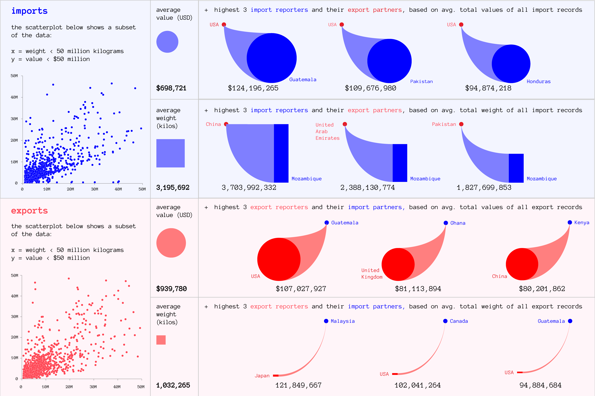
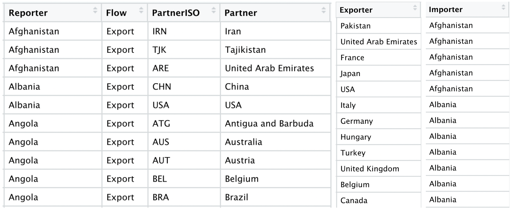
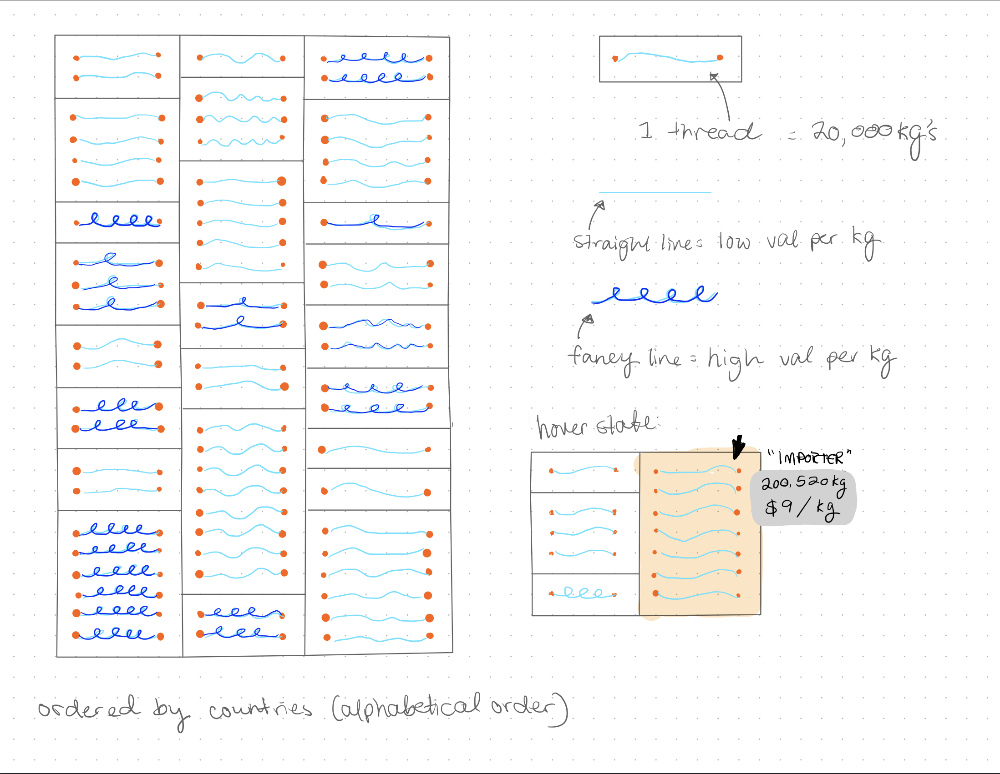

Worn Textile Trade
HOME* Project Overview *
I spent 4 month developing this visualization of data from the UN Comtrade database on the international trade of worn textiles. This project was accepted into the Information+ XYZ exhibition for display in November of 2023. There is currently very limited publicly available data on the fashion industry. In particular,post-consumer waste in the fashion industry at a large scale is incredibly difficult to track through data. Monitoring trade flows of worn textiles helps us begin to get an idea of how many post-consumer textiles are floating around in the world -- and which countries the majority of these used clothing and fabric items end up in. Data on trade is public information, and not privately owned data in, for example, the hands of a single clothing brand.
Although trade data does not allow us to track what happens to the textiles after they are traded, based on the literature, we do know a few likely fates for worn textiles:
- They are sold cheaply in secondhand markets. Often, what does not get sold in the goodwills of wealthier countries eventually ends up in the marketplaces of developing countries.
- If the textiles do not sell, they are disposed of. They may be formally landfilled or incinerated, but even wealthy countries generally lack sufficient facilities to formally landfill the huge quantities of used textiles that they export.
This means that developing countries tend to bear the brunt of the final disposal of textiles in the global system -- they must find a way to dispose of mass quantities of worn textiles exported to them, and this often means informal/unregulated dumping.
* Project Process and Methodology *
I began the project by conducting a visual exploration of the data. In order to do this, first did some general structuring of the dataset in R, and then loaded my csv file into Processing for visualization. I visualized the variables Weight (in kilos), Value (in USD), and Flow (imports and exports) for each year in my dataset. Data points tagged as imports are on the left in blue, and exports are in the right in red. Weight is encoded as the size of the main colored circle, and value is encoded through the line weight of the circle stroke.

Then, I created a data dashboard to further describe and summarize the dataset: 
After creating this dashboard, it became clear that the differentiation between imports and exports was arbitrary, and simply representative of which trading partner had been the reporting party. I restructured the data so that instead, we had an exporter and an importer for each recorded trade instance. 
I continued to explore how to visualize this information. In this version, I continued to use the the flow glyphs from the dashboard, using the p5js library to generate the visualization. Initially, I had them very spaced out -- but discovered that when condensed together, they began to look like threads on a textile.

In the final iteration of the project, I continued to explore the metaphor of threads, and the visualization takes the form of a patchwork textile. 
View live project